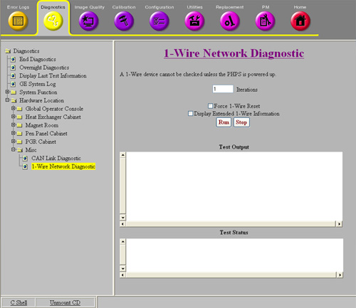
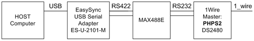
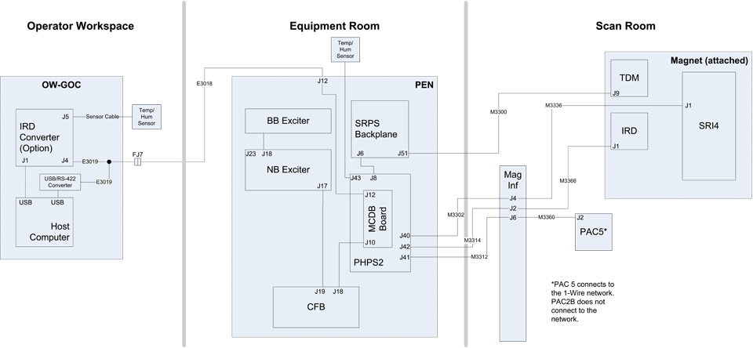
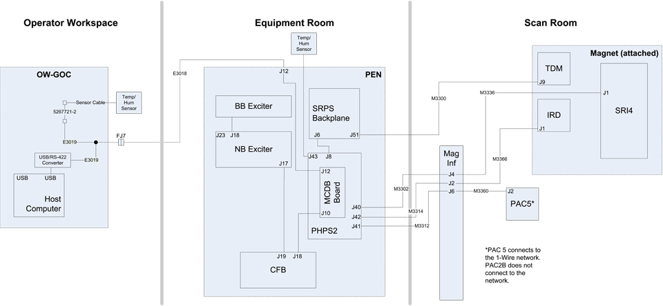
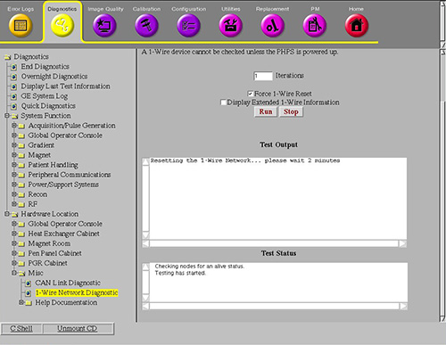
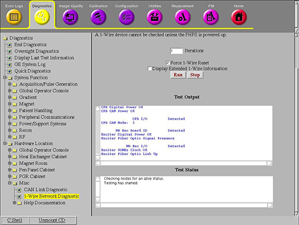
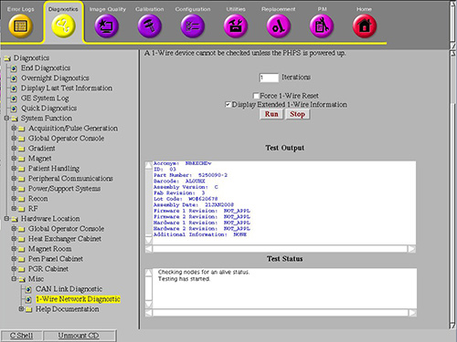
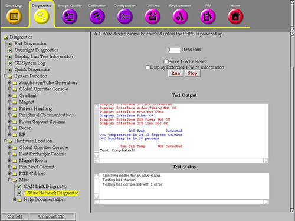

Proprietary to General Electric Company
Direction 5670006, Rev# 1
Discovery MR750w GEM Service Methods
Module Version 5.0, Version Date 4/13/11
Proprietary to General Electric Company |
Diagnostics >> System Function >> Global Operator Console >> 1-Wire Network Diagnostic
Diagnostics >> System Function >> Patient Handling >> 1-Wire Network Diagnostic
Diagnostics >> System Function >> Peripheral Communications >> 1-Wire Network Diagnostic
Diagnostics >> Hardware Location >> Global Operator Console >> 1-Wire Network Diagnostic
Diagnostics >> Hardware Location >> Magnet Room >> 1-Wire Network Diagnostic
Diagnostics >> Hardware Location >> Pen Panel Cabinet >> 1-Wire Network Diagnostic
Diagnostics >> Hardware Location >> PGR Cabinet >> RF >> 1-Wire Network Diagnostic
Diagnostics >> Hardware Location >> Misc >> 1-Wire Network Diagnostic
Illustration 1: 1-Wire Network Diagnostic

The 1-Wire Diagnostic checks to see if all of the 1-Wire Devices in the network shown on the block diagram in Section 5 are connected. Some of the 1-Wire Devices report status information for the hardware in which they reside. Expected system operation status, such as cable connections and power status, displays in blue text. Unexpected test results, such as 1-Wire Devices not detected or cables not connected, displays in red.
| NOTE: | The test also allows you to reset the 1-Wire network by checking the optional “Force 1-Wire Reset” checkbox before running the test. Do this if the network is not responding or if the network configuration requires refreshing after changes have been made to the network. |
1-Wire Network
Power and Cable Connections
Temperature and Humidity Sensors
Before the 1-Wire Network Diagnostic can be run, the following requirements must be met:
The USB cable from the USB-to-Serial converter (which is connected to the PHPS) must be connected to a USB port on the host computer.
The PHPS must be powered up.
Illustration 2 is an overview of the cable connections between the Host Computer and PHPS2.
Illustration 2: 1-Wire Network Block Diagram (1 of 2)

Illustration 3 and Illustration 4 show connections to 1-Wire devices that are tested when the diagnostic runs. Illustration 3 shows the optional In-Room Display (IRD) and Broadband Exciter, and Illustration 4 shows the connections if an IRD is not part of the system.
The Physiological Acquisition Controller (PAC) is connected to the 1-Wire network only if it is a PAC5 or later. The PAC2B is not connected to the 1-Wire network.
Illustration 3: 1-Wire Network Block Diagram (2 of 3)

Illustration 4: 1-Wire Network Block Diagram (3 of 3)

If desired, enter or select alternate test parameters as described below.
To run the diagnostic more than once, enter a different value in the Iterations field.
To force the 1-Wire network to be remapped, select Force 1-Wire Reset. This is useful when hardware has been replaced, to identify 1-Wire Devices in the new hardware. (A TPS Reset also accomplishes a 1-Wire Reset, but any new hardware installed during troubleshooting can be identified using this option prior to doing a TPS Reset.) See Illustration 5 and Illustration 6.
Illustration 5: Force 1-Wire Reset - Starting

Illustration 6: Force 1-Wire Reset - Running

To display all information programmed in the 1-Wire Board Identifier Devices, select Display Extended 1-Wire Information. This option provides more detailed information than you get in the HART log. It also displays information for all bits of programmable input and output, including those that may not currently be used. See Illustration 7.
Illustration 7: Extended 1-Wire Information

Click [Run].
All 1-Wire Devices detected by the 1-Wire Network diagnostic display in blue text in the Test Output area. 1-Wire Devices which are not detected display in red text. See Illustration 8.
Illustration 8: 1-Wire Network Diagnostic Test Output
